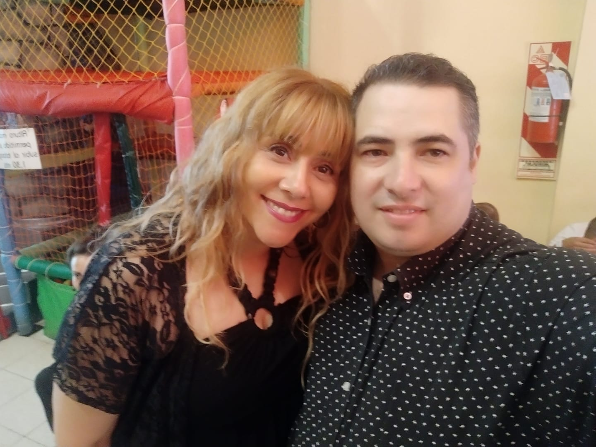
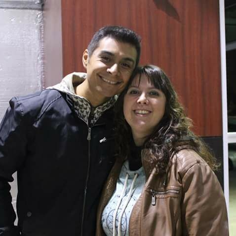

Marcos y Gabriela Espinach. Pastores Principales.
Lo que alcanzamos fue gracias a permanecer juntos y luchar por los desafíos que se atravesaron en nuestro camino. Declaramos que vienen los mejores años por delante dónde veremos cada una de las promesas de Dios cumplidas.
Soña en grande, mírate con los ojos que Dios te ve, eso te va ha ayudar cuando lleguen las dudas, desánimo, cansancio, etc. SOLO DIOS va ha suplir tu necesidad, nunca te olvides que tu identidad está en El. TODO LO PUEDO EN CRISTO QUE ME FORTALECE

Diego y Debora Bini. Pastores.
Diego y Debora como el resto de su familia, sirven a la obra de Dios desde jovenes.
